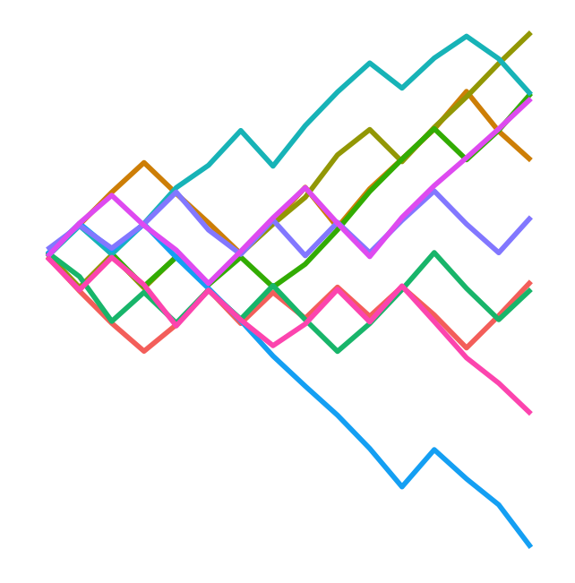

Welcome to M362M. Here is some information and some ground rules. Read carefully and let me know if there is anything unclear. This syllabus is subject to change; students who miss class are responsible for learning about any changes to the syllabus.
Course number. M362M (53875)
Course meets. online, TTh 12:30am - 2:00pm
Flags. QR (quantitative reasoning)
Instructor. Gordan Žitković
Email. Use Canvas to email
Office Hours. Please contact me for an appointment.
Course Description. M362M is an undergraduate course on stochastic processes and applications. We focus on several classes of elementary stochastic processes which are often used in various applications such as random walks, discrete Markov chains and, time permitting, the Poisson process and Brownian motion. The course will promote the generative approach to probability and the use of computer simulations.
Learning Objectives.
Students will get acquainted with mathematical tools and techniques, as well as the probabilistic intuition necessary for understanding and successful use of stochastic models in a variety of applications within mathematics and in science, engineering, economics, etc. They will also learn how to build new models, in yet-unencountered situations and novel frameworks.
Students will become familiar with the basics of the programming language R and the RStudio IDE. They will learn how to use R to simulate random variables and stochastic processes. Those skills will allow them to answer a much wider spectrum of questions about the behavior of stochastic processes, compared to a purely analytic approach.
Prerequisites. The formal prerequisite is the grade B or better in M362K. Students are assumed to be at home with the basics of probability as presented in, e.g., Ross’s First Course in Probability, Pitman’s Probability or Asimow and Maxwell’s Probability and Statistics with Applications; there will be a brief review. Also, a good working knowledge of calculus and basic linear algebra is assumed; no review will be given.
Students are not assumed to have any prior programming experience and the basics of R will be covered from scratch.
Class format and online attendance. With the class being completely online, and given its strong computational flavor, the class will be delivered in a somewhat “flipped” format. The students will get assigned reading before most classes, and a short quiz on the assigned content will be administered (see below for details). The class time will be used to answer student questions, clarify content and work in groups on additional exercises. The students are encouraged to use the tag topic_suggestions on Piazza to suggest topics and problems from their assigned reading they would like to see explained during the next class meeting.
Textbook. There is no required textbook. Lecture notes written by the instructor will be posted online (the link will be provided on Canvas). The students in need of an additional source of problems (or explanation) are referred to the following books:
Essentials of Stochastic Processes by Rick Durrett (a free version is available at http://www.math.duke.edu/~rtd/EOSP/EOSP2E.pdf),
Adventures in Stochastic Processes by Sidney I. Resnick,
Introduction to Probability Models by Sheldon Ross.
Online resources.
Zoom will be used for all classes and for office hours. Videos of all zoom sessions (except for private meetings) will be accessible to all students via Canvas. They will include transcripts of the lectures and chat logs.
The course-management system Canvas will be used in this course to keep track of grades, serve as a repository of links to other resources and to relay various announcements. The students are responsible for the contents of these announcements. The easiest way not to miss any is to turn on (i.e. not turn off) Announcements in their account’s Notification menu.
This term we will be using Piazza for class discussion. The system is highly catered to getting you help fast and efficiently from classmates and myself. Rather than emailing questions to the instructor, I encourage you to post your questions on Piazza. Find our class signup link at: https://piazza.com/utexas/fall2020/53875
A set of online lecture notes written by the instructor will be provided to students; you can access them at https://gordanz.github.io/M362M These notes will include numbered problems, some of which will be featured in hw assignments. All course materials will be available on Github in the public repository https://github.com/gordanz/M362M. If you don’t know what Github is, or if you simply do not want to use it, don’t worry; everything will be linked to in Canvas.
Sharing of Course Materials is Prohibited. No materials used in this class, including, but not limited to, lecture hand-outs, videos, assessments (quizzes, exams, papers, projects, homework assignments), in-class materials, review sheets, and additional problem sets, may be shared online or with anyone outside of the class unless you have my explicit, written permission. Unauthorized sharing of materials promotes cheating. It is a violation of the University’s Student Honor Code and an act of academic dishonesty. I am well aware of the sites used for sharing materials, and any materials found online that are associated with you, or any suspected unauthorized sharing of materials, will be reported to Student Conduct and Academic Integrity in the Office of the Dean of Students. These reports can result in sanctions, including failure in the course.
Short quizzes. A short Canvas quiz will be assigned in parallel with each reading assignment. Their primary purpose is to make sure you read and understood the assigned material. Two lowest quiz scores will be dropped.
Homework assignments. A weekly or bi-weekly homework will be assigned (with the assignments posted on Canvas). The submission will be electronic, through Canvas. Detailed instructions on the proper format of your submissions will be posted in due time (we need to cover a little bit of R before that). Submit well before the deadline - the system has been known to get “overwhelmed” close to it. If everything else fails, send your file(s) directly to the instructor (before the deadline!) with a detailed explanation of the difficulties you experienced. Late hw will not be accepted.
You are allowed (and, in fact, encouraged) to work on your homework in groups of up to 4 people, and to submit a single document per group. Do not forget to include the names of all group members. Two lowest hw scores will be dropped.
Exams. In addition to short quizzes, there will be three longer exams. All exams will be “take-home” and “open-notes” and will consist of a mix of theoretical and programming questions. Exams will be posted on Canvas and you will get a 24-hour period for each of them. Be prepared to set aside an uninterrupted two hours to complete and upload the exam. The exams will be submitted via Canvas. The schedule is as follows:
If you miss an exam for a documented reason (illness, approved and previously announced religious holiday, or some other extraordinary circumstance), make-up arrangements will be made on a case-by-case basis.
Extra credit. Each of the following will earn you some extra credit. Note that the most you can get is 15%.
2% : if you give a correct answer to a student question on Piazza. The instructor will choose the best among all the answers, and assign its author 2%. The instructor reserved the right not to assign any extra credit is the question is not meaningful or too easy, or is none of the answers is correct and/or complete. Each student can accumulate at most 6% extra credit this way.
1%: for each topic suggestion made on Piazza. As above, at most one person may get credit for a given suggestion, and the instructor will be the final arbiter of what deserves a point and what does not. Each student can accumulate at most 4% extra credit this way.
5%: if you submit all your homework in R markdown (you will learn more about it in class). This includes both theoretical and programming questions.
Final grade. The final grade is composed as follows:
| Assignment | Percentage of final grade |
|---|---|
| Quizzes | 15% |
| Homework | 25% |
| Exams | 60% (20% each) |
There is no curve in this class and the letter grades are assigned according to the following table:
| A | A- | B+ | B | B- | C+ | C | C- | D+ | D | D- |
|---|---|---|---|---|---|---|---|---|---|---|
| 94 - 100 | 90-94 | 86 - 90 | 83 - 86 | 80 - 83 | 75 - 80 | 70 - 75 | 65 - 70 | 60 - 65 | 55 - 60 | 50 - 55 |
Class Recordings. Class recordings are reserved only for students in this class for educational purposes and are protected under FERPA. The recordings should not be shared outside the class in any form. Violation of this restriction by a student could lead to Student Misconduct proceedings.
Drop dates. The procedure/consequences are different, depending on whether you drop before or after the 12th day of classes (09/11), and then, before or after the main drop (Q-drop) date (10/29). (See https://ugs.utexas.edu/vick/academic/adddrop for details)
Academic (dis)Honesty. Students who violate University rules on academic dishonesty are subject to disciplinary penalties, including the possibility of failure in the course and/or dismissal from the University. Since such dishonesty harms the individual, all students, and the integrity of the University, policies on academic dishonesty will be strictly enforced. For further information, please visit the Student Conduct and Academic Integrity website at: http://deanofstudents.utexas.edu/conduct
Students with Disabilities. The University of Texas at Austin provides upon request appropriate academic accommodations for qualified students with disabilities. If you have a documented disability and you need special treatment as a result of your disability, please let me know as soon as possible, but definitely within the first 3 weeks of class. For more information, contact the Office of the Dean of Students at 471-6259, 471-4641 (TTY), 1-866-329- 3986 (video phone) or go to http://ddce.utexas.edu/disability/
Religious holy days. Religious holy days sometimes conflict with class and examination schedules. Sections 51.911 and 51.925 of the Texas Education Code relate to absences by students and instructors for observance of religious holy days.
Section 51.911 states that a student who misses an examination, work assignment, or other project due to the observance of a religious holy day must be given an opportunity to complete the work missed within a reasonable time after the absence, provided that he or she has properly notified each instructor.
It is the policy of The University of Texas at Austin that the student must notify each instructor at least fourteen days prior to the classes scheduled on dates he or she will be absent to observe a religious holy day. For religious holidays that fall within the first two weeks of the semester, the notice should be given on the first day of the semester. The student may not be penalized for these excused absences but the instructor may appropriately respond if the student fails to complete satisfactorily the missed assignment or examination within a reasonable time after the excused absence.
Counseling and mental health. Counseling and other mental-health services are available from Counseling and Mental Health Center, Student Services Bldg (SSB), 5th Floor. (hours: M–F 8am–5pm. phone: 512 471 3515, web: http://www.cmhc.utexas.edu)
Sanger Learning Center. All students are welcome to take advantage of Sanger Center’s classes and workshops, private learning specialist appointments, peer academic coaching, and tutoring for more than 70 courses in 15 different subject areas. For more information, please visit http://www.utexas.edu/ugs/slc or call 512-471-3614 (JES A332).
Important Safety Information. If you have concerns about the safety or behavior of fellow students, TAs or Professors, call BCAL (the Behavior Concerns Advice Line): 512-232-5050. Your call can be anonymous.
Further information about (campus) safety and security can be obtained from the Office of Campus Safety and Security, 512-471-5767, http://www.utexas.edu/safety/
| Number | Date | Weekday | Topic |
|---|---|---|---|
| 1 | Aug 27 | Thu | Introduction |
| 2 | Sep 01 | Tue | RStudio and R - setup |
| 3 | Sep 03 | Thu | Basic R, R notebooks |
| 4 | Sep 08 | Tue | Simulation of random variables |
| 5 | Sep 10 | Thu | Monte Carlo |
| 6 | Sep 15 | Tue | Simulation and conditioning |
| 7 | Sep 17 | Thu | Random walks |
| 8 | Sep 22 | Tue | " |
| 9 | Sep 24 | Thu | " |
| 10 | Sep 29 | Tue | " |
| 11 | Oct 01 | Thu | In-term 1 |
| 12 | Oct 06 | Tue | Branching Processes |
| 13 | Oct 08 | Thu | " |
| 14 | Oct 13 | Tue | " |
| 15 | Oct 15 | Thu | " |
| 16 | Oct 20 | Tue | Markov Chains |
| 17 | Oct 22 | Thu | " |
| 18 | Oct 27 | Tue | " |
| 19 | Oct 29 | Thu | " |
| 20 | Nov 03 | Tue | " |
| 21 | Nov 05 | Thu | " |
| 22 | Nov 10 | Tue | " |
| 23 | Nov 12 | Thu | In-term 2 |
| 24 | Nov 17 | Tue | Poisson Process |
| 25 | Nov 19 | Thu | " |
| 26 | Nov 24 | Tue | " |
| - | Nov 26 | Thu | no class |
| 27 | Dec 01 | Tue | Brownian motion |
| 28 | Dec 03 | Thu | " |
In-term 3 will take place on Dec 12, the university-scheduled final-exam day.